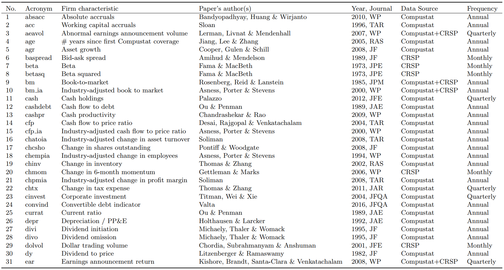
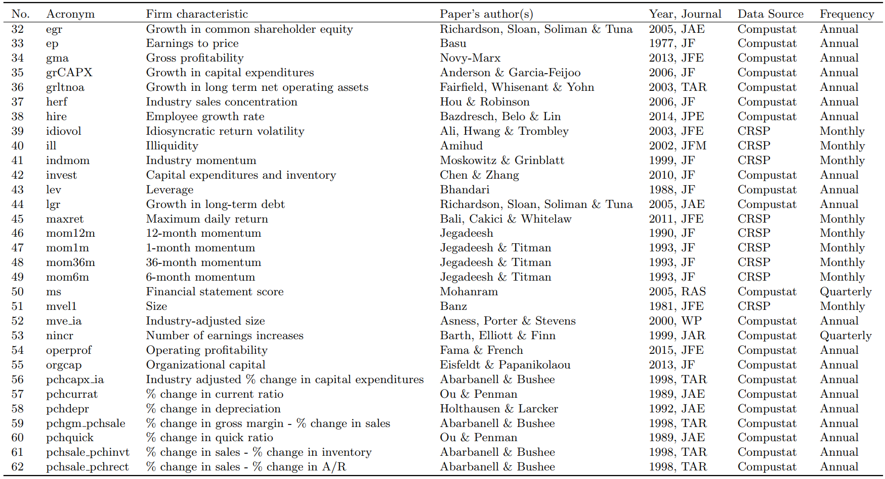
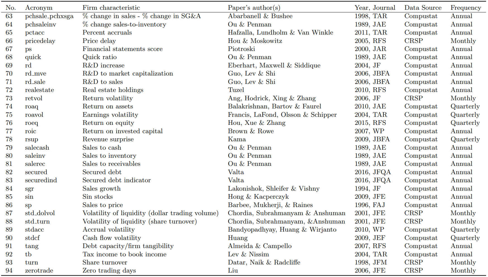

7 时间序列监督学习
7.1 时间序列监督学习的基本概念
时间序列数据是按时间顺序收集的一系列数据点，如股票价格、气象数据、用户行为记录等。时间序列监督学习是指利用历史时间序列数据预测未来值的机器学习任务。
7.2 时间序列监督学习的步骤
7.2.1 数据收集与预处理
- 数据收集：获取包含时间戳的序列数据
- 数据清洗：处理缺失值、异常值和噪声
- 数据标准化：对数据进行归一化或标准化处理
- 特征工程：
- 滞后特征（Lag Features）：使用过去的观测值作为特征
- 窗口统计特征：计算滑动窗口内的统计量（均值、方差、最大值等）
- 时间特征：提取时间戳中的周期性信息（小时、星期几、月份等）
- 差分特征：计算数据点之间的差值，消除趋势
7.2.2 特殊的样本分割方法
时间序列数据的样本分割与传统监督学习有显著区别：
- 时间序列分割原则：必须严格按照时间顺序分割数据，确保训练数据在测试数据之前，这是因为未来的数据在实际预测时是不可获取的。
7.2.2.1 传统随机分割的问题
在传统监督学习中，我们通常采用随机分割数据：
数据: [1, 2, 3, 4, 5, 6, 7, 8, 9, 10]
随机分割后:
训练集: [1, 3, 5, 8, 9]
测试集: [2, 4, 6, 7, 10]这种方法在时间序列问题中会导致数据泄露和过于乐观的评估结果，因为模型可能利用未来的信息来预测过去，而这在实际应用中是不可能的。
7.2.2.2 时间序列数据分割方法详解
以股票价格预测为例，假设我们有12个月的每日收盘价数据，希望构建模型来预测未来的价格。
- 扩展窗口法（Expanding Window）
扩展窗口法是使用所有历史数据进行训练，预测窗口不断向前移动：
第1轮:
训练集: [月份1-3]
测试集: [月份4]
第2轮:
训练集: [月份1-4]
测试集: [月份5]
第3轮:
训练集: [月份1-5]
测试集: [月份6]
...以此类推具体示例：假设我们有2022年1月至12月的股票数据，第一轮使用1-3月数据训练，预测4月；第二轮使用1-4月数据，预测5月；第三轮使用1-5月数据训练，预测6月…最终评估结果为所有测试期的平均表现。
优势： - 充分利用所有历史数据 - 随着时间推移，模型可获得更多训练数据 - 适合长期趋势预测和季节性数据
适用场景：宏观经济指标预测、季节性明显的数据（如零售销售）、需要考虑长期模式的预测任务
- 滑动窗口法（Sliding Window）
滑动窗口法使用固定长度的数据窗口进行训练和测试：
第1轮:
训练集: [月份1-3]
测试集: [月份4]
第2轮:
训练集: [月份2-4]
测试集: [月份5]
第3轮:
训练集: [月份3-5]
测试集: [月份6]
...以此类推具体示例：使用连续3个月的数据预测紧接着的1个月。每次向前滑动一个月，同时保持训练窗口大小不变。如使用2022年1-3月数据训练，预测4月；然后使用2-4月数据训练，预测5月；然后使用3-5月数据训练，预测6月…
优势： - 适合捕捉近期模式和趋势 - 减少较旧数据的影响 - 计算效率高，训练集大小恒定
适用场景：快速变化的时间序列，如高频交易数据、社交媒体趋势、短期市场预测
- 多步预测分割
多步预测分割专注于一次性预测多个未来时间点：
训练集: [月份1-6]
测试集: [月份7, 8, 9] // 一次性预测多个未来月份具体示例：使用1-6月的历史数据，同时预测7、8、9月的值，而不是仅预测下一个月。
实现方式： 1. 直接法：构建单一模型直接预测t+1, t+2, …, t+h的值 模型输入: X_t (t时刻特征) 模型输出: [y_{t+1}, y_{t+2}, ..., y_{t+h}] (未来h个时间点的预测值)
递归法：使用单步预测模型，将前一步的预测结果作为下一步的输入特征
预测y_{t+1}: 使用[X_1, X_2, ..., X_t] 预测y_{t+2}: 使用[X_2, ..., X_t, y_{t+1}] 预测y_{t+3}: 使用[X_3, ..., X_t, y_{t+1}, y_{t+2}]
优势： - 适合需要长期规划的场景 - 可以捕捉时间序列的长期依赖性 - 评估模型在不同预测步长上的性能
适用场景：需求预测、资源规划、长期投资策略
7.2.2.3 时间序列交叉验证的实际示例
以下是一个完整的实例，说明如何对2022年1月至12月的每日股票价格数据进行时间序列交叉验证：
数据准备：
数据集：2022年1月至12月的每日股票价格
特征：每日开盘价、最高价、最低价、交易量、技术指标等
目标：预测下一个交易日的收盘价扩展窗口法实例：
轮次1：使用1-3月数据训练，预测4月第一周
轮次2：使用1-4月数据训练，预测5月第一周
轮次3：使用1-5月数据训练，预测6月第一周
...
轮次8：使用1-10月数据训练，预测11月第一周
轮次9：使用1-11月数据训练，预测12月第一周滑动窗口法实例：
轮次1：使用1-3月数据训练，预测4月第一周
轮次2：使用2-4月数据训练，预测5月第一周
轮次3：使用3-5月数据训练，预测6月第一周
...
轮次8：使用8-10月数据训练，预测11月第一周
轮次9：使用9-11月数据训练，预测12月第一周多步预测分割实例：
任务：使用过去3个月的数据，预测未来1个月的每周价格
分割方式：
训练集：1-3月数据
测试集：4月(4个预测值，对应4周)
然后滑动窗口：
训练集：2-4月数据
测试集：5月(4个预测值)
...以此类推
7.2.2.4 各方法的对比与选择
| 分割方法 | 训练数据量 | 计算成本 | 适用场景 | 主要优势 |
|---|---|---|---|---|
| 扩展窗口法 | 不断增加 | 高 | 长期稳定数据、季节性数据 | 充分利用所有历史数据 |
| 滑动窗口法 | 固定 | 低 | 快速变化的时间序列 | 专注于最新趋势，减少旧数据影响 |
| 多步预测分割 | 固定 | 中等-高 | 需要长期预测的应用 | 评估模型在多个未来时间点的预测能力 |
7.2.2.5 选择合适的分割方法的建议
- 考虑数据特性：
- 快速变化的数据（如股票价格）→ 滑动窗口
- 长期稳定的数据（如宏观经济指标）→ 扩展窗口
- 考虑预测目标：
- 短期预测（1-2步）→ 滑动窗口
- 长期预测（多步）→ 多步预测分割
- 考虑计算资源：
- 资源有限 → 滑动窗口（训练集大小固定）
- 资源充足 → 扩展窗口（可利用更多历史数据）
- 数据量考虑：
- 数据量小 → 扩展窗口（最大化训练数据利用）
- 数据量大 → 可考虑滑动窗口（聚焦最相关数据）
7.2.3 模型选择与训练
- 适合时间序列的模型：
- 传统统计模型：ARIMA、指数平滑法
- 机器学习模型：随机森林、XGBoost、LSTM、Transformer
- 混合模型：结合统计模型和机器学习模型的优点
- 训练注意事项：
- 考虑时间依赖性
- 避免数据泄露（不使用未来信息）
- 合理设置预测步长（短期或长期预测）
7.2.4 模型评估与优化
- 评估指标：
- MSE、RMSE、MAE：衡量预测误差
- MAPE：相对误差百分比
- 方向准确率：预测趋势变化的正确率
- 超参数调优：
- 使用时间序列交叉验证而非随机交叉验证
- 考虑时间窗口大小、滞后阶数等特有超参数
7.2.5 模型部署与监控
- 滚动预测：定期使用新数据更新模型
- 模型监控：检测数据分布变化、模型漂移
- 自适应更新：根据预测表现动态调整模型
7.3 时间序列监督学习与传统监督学习的区别
| 方面 | 时间序列监督学习 | 传统监督学习 |
|---|---|---|
| 数据依赖性 | 数据点间存在时间依赖关系 | 假设数据点独立同分布 |
| 样本分割 | 严格按时间顺序分割，不可随机打乱 | 通常随机分割，可以打乱顺序 |
| 交叉验证 | 使用时间序列交叉验证方法 | 使用K折交叉验证等随机方法 |
| 特征工程 | 重视滞后特征、时间特征和窗口特征 | 关注静态特征和特征间关系 |
| 数据泄露 | 易发生时序泄露（使用未来信息） | 主要关注特征泄露 |
| 评估重点 | 关注预测的时间稳定性和趋势把握 | 关注整体准确率和泛化能力 |
| 模型更新 | 需要频繁更新以适应最新数据 | 通常在分布稳定时可长期使用 |
7.4 挑战与解决方案
- 非平稳性：数据分布随时间变化
- 解决方案：差分、移动平均、时间分解
- 季节性：数据存在周期性模式
- 解决方案：季节性分解、季节性特征
- 长期依赖：当前预测可能依赖于很久之前的数据
- 解决方案：使用LSTM、注意力机制等处理长期依赖
- 多变量预测：多个相关时间序列的联合预测
- 解决方案：多变量模型、变量间关系建模
7.5 实践案例：预测股票收益率
参考文献: Gu, Kelly, and Xiu, (2020). “Empirical Asset Pricing via Machine Learning”, Review of Financial Studies.
研究问题: 比较不同的机器学习方法在衡量资产风险溢价（预测股票收益）这一经典实证资产定价问题中的表现。
主要贡献: 1. 设定新基准: 为机器学习方法在衡量风险溢价方面的预测准确性提供新基准，展示了显著优于传统方法的样本外预测能力（高 \(R^2_{oos}\)）。 2. 经济价值: 证明使用机器学习预测能为投资者带来巨大的经济收益，部分策略表现可达文献中领先的基于回归策略的两倍。 3. 方法识别与机制: 识别出表现最佳的方法（树模型和神经网络），并将其预测优势归因于捕捉了其他方法忽略的非线性预测因子交互作用。 4. 关键预测因子: 所有方法都认同同一组主要的预测信号，包括动量、流动性和波动率的变体。
7.5.1 数据与特征工程
- 资产: 近 30,000 只美国个股 (NYSE, AMEX, NASDAQ)。
- 时间: 1957年3月 - 2016年12月 (60年)。
- 频率: 月度数据。
- 原始预测因子:
- 94 个股票层面特征 (Characteristics)。
- 年度更新: 61个, 季度更新: 13个, 月度更新: 20个。
- 74 个行业虚拟变量 (基于 SIC 两位码)。
- 8 个宏观经济预测变量 (来自 Welch & Goyal, 2008)
- dividend-price ratio (dpr)
- earnings-price ratio (epr)
- book-to-market ratio (bmr)
- net equity expansion (ntis)
- Treasury-bill rate (tbl)
- term spread (tms)
- default spread (dfy)
- stock variance (svar)
- 94 个股票层面特征 (Characteristics)。



- 特征工程:
- 标准化: 每个时间点，对所有股票层面的特征（94个）进行横截面排序 (Cross-sectional rank)，然后将排序值线性映射到 \([-1, 1]\) 区间。
- 缺失值处理: 使用当月该特征的横截面中位数填补缺失值。
- 滞后处理: 为避免前视偏差 (look-ahead bias)，对会计数据特征（季度、年度）的更新时间进行了滞后处理（月度特征滞后1个月，季度特征至少4个月，年度特征至少6个月）。
- 交互项构建: 构建宏观变量 \(x_t\) (包含常数项) 与标准化后的股票特征 \(c_{i,t}\) 的交互项，作为最终输入机器学习模型的预测变量 \(z_{i,t} = x_t \otimes c_{i,t}\)。总输入特征数 \(P = 94 \times (8+1) + 74 = 920\)。
7.5.2 实证设定
总体模型: 预测个股超额收益 \(r_{i,t+1}\)： \[r_{i,t+1} = E_t(r_{i,t+1}) + \epsilon_{i,t+1}\] 其中条件期望（风险溢价）是预测变量 \(z_{i,t}\) 的灵活函数 \(g^*(\cdot)\)： \[E_t(r_{i,t+1}) = g^*(z_{i,t})\] * \(g^*(\cdot)\) 函数形式对所有时间和股票保持不变。
预测变量构建 \(z_{i,t}\): * 见“特征工程”部分的交互项构建。 * 此设定允许纯粹的股票层面信息 (通过 \(c_{i,t}\) 类似风险暴露 \(\beta_{i,t}\)) 和总体经济状况 (通过 \(x_t\) 类似动态风险溢价 \(\lambda_t\)) 进入预期收益模型。
样本划分与评估: * 训练集: 1957 - 1974 (18年)。 * 验证集: 1975 - 1986 (12年, 用于超参数调优)。 * 测试集: 1987 - 2016 (30年, 用于样本外评估)。 * 更新: 每年重新训练模型，训练集递归增加，验证集滚动。 * 主要评估指标: 样本外预测 \(R^2\) (\(R^2_{oos}\))。 \[R^2_{oos} = 1 - \frac{\sum_{(i,t)\in T_3} (r_{i,t+1} - \hat{r}_{i,t+1})^2}{\sum_{(i,t)\in T_3} r^2_{i,t+1}}\] * \(R^2_{oos}\) 定义解释: * 分母使用的是平方超额收益之和 \(\sum r^2_{i,t+1}\)，而不是通常的平方中心化收益之和 (即 \(\sum (r_{i,t+1} - \bar{r})^2\))。 * 原因: 传统的基于历史均值 (\(\bar{r}\)) 的基准对于个股收益预测来说过于宽松。个股历史平均收益本身波动极大且预测能力很差，通常不如直接预测为零。若以历史均值为基准，会人为地抬高 \(R^2_{oos}\)，使得评价标准过低。 * 因此，本文使用的 \(R^2_{oos}\) 是将模型预测与零收益预测进行比较，这是一个更严格、更合理的基准。
7.5.3 方法论概述
本文比较了多种机器学习方法预测股票风险溢价的表现，涵盖了从简单到复杂的不同模型类别：
- 简单线性模型 (OLS): 包括仅使用少数关键特征 (Size, B/M, Momentum) 的模型和使用全部 900+ 特征的模型。
- 带惩罚项的线性模型 (Penalized Linear): 如 Elastic Net (结合 Lasso 的变量选择和 Ridge 的系数收缩)。
- 降维方法 (Dimension Reduction): 主成分回归 (PCR) 和偏最小二乘法 (PLS)。
- 广义线性模型 (Generalized Linear Model, GLM): 使用样条函数捕捉单变量非线性，但不含交互项。
- 树模型 (Trees): 包括随机森林 (Random Forest, RF) 和梯度提升回归树 (Gradient Boosted Regression Trees, GBRT)。
- 神经网络 (Neural Networks, NN): 测试了从 1 层到 5 层隐藏层的不同深度网络 (NN1-NN5)。
7.5.4 主要实证结果：个股层面预测
样本外 \(R^2_{oos}\) (月度):
- OLS: 使用全部 900+ 预测变量的 OLS 表现很差 (\(R^2_{oos} < 0\))，有过拟合问题。OLS-3 (仅 Size, B/M, Mom) 表现尚可 (\(R^2_{oos} = 0.16\%\))。
- 正则化/降维: 优于 OLS-3。Elastic Net (\(0.11\%\)), PCR (\(0.26\%\)), PLS (\(0.27\%\)) 能有效处理高维预测变量。
- 非线性模型:
- GLM: 未能显著超越线性模型 (\(0.19\%\))，表明仅加入单变量非线性作用有限。
- 树模型: RF (\(0.33\%\)), GBRT (\(0.34\%\)) 表现优于线性模型。
- 神经网络: 表现最佳。NN1 (\(0.33\%\)), NN2 (\(0.39\%\)), NN3 (\(0.40\%\)), NN4 (\(0.39\%\)), NN5 (\(0.36\%\))。
- 关键: 预测能力的提升主要来自允许预测变量间的非线性交互作用（树和 NN 模型的核心优势）。
- 深度: “浅层”学习优于”深层”学习。NN 表现随层数增加先升后降，在 NN3 达到峰值。树模型也倾向于选择较浅的结构。
统计显著性 (Diebold-Mariano Tests):
- 正则化/降维方法显著优于未约束的 OLS。
- 树模型优于线性模型，但优势不显著。
- 神经网络显著优于线性和广义线性模型。
- 神经网络相对树模型的优势不显著。
7.5.5 主要实证结果：投资组合层面预测
基于个股预测构建投资组合预测 (Bottom-up):
- S&P 500 指数:
- OLS-3 表现不佳 (\(R^2_{oos} = -0.22\%\))。
- GLM 表现提升 (\(R^2_{oos} = 0.71\%\))。
- 树模型和 NN 表现优异， \(R^2_{oos}\) 在 \(1.08\%\) (NN1) 到 \(1.80\%\) (NN3) 之间。
- 因子投资组合 (SMB, HML, RMW, CMA, UMD 等):
- 模式类似 S&P 500，非线性方法（尤其是 NN）表现突出。
- NN3 对所有测试的因子组合都产生了正的 \(R^2_{oos}\)。
- 原因: 投资组合层面预测力更强，因为聚合过程平均掉了部分个股层面的噪音，提升了信号强度。
7.5.6 主要实证结果：经济显著性
机器学习预测的经济价值巨大:
- 市场择时 (Market Timing):
- 使用 NN 预测进行 S&P 500 择时，年化夏普比率可从买入持有的 0.51 提高到 0.77 (NN3)。
- 对多种特征组合的择时策略，夏普比率均有显著提升。
- 机器学习投资组合 (直接基于预测排序):
- 构建基于 ML 预测排序的十分位多空组合 (Decile Long-Short)。
- 价值加权: NN4 策略月均回报 2.3%，年化夏普比率 1.35。OLS-3 仅为 0.61。
- 等权重: 表现更优。NN4 策略年化夏普比率高达 2.45。剔除微盘股后仍有 1.69。
- 风险调整后收益 (Alpha):
- 基于 ML 预测构建的投资组合相对 Fama-French 五因子+动量六因子模型，产生了显著的 alpha。
- NN 策略的因子模型解释力相对较低 (R^2 约 10%-30%)，信息比率 (IR) 高。
结论: 机器学习预测不仅统计显著，而且能转化为可观的、风险调整后的投资收益。
7.5.7 主要实证结果：变量重要性
哪些预测因子最重要？
- 方法间一致性: 不同机器学习方法在识别重要预测因子方面高度一致。
- 最重要特征类别:
- 价格趋势 (Price Trends): 最重要。包括短期反转 (mom1m)、12个月动量 (mom12m)、动量变化 (chmom)、行业动量 (indmom)、近期最大回报 (maxret)、长期反转 (mom36m)。
- 流动性 (Liquidity): 换手率 (turn)、市值 (mvel1)、美元交易量 (dolvol)、Amihud 非流动性 (ill)、零交易天数 (zerotrade)、买卖价差 (baspread)。
- 风险 (Risk): 总/异质波动率 (retvol, idiovol)、市场 beta (beta)、beta 平方 (betasq)。
- 估值与基本面: 市盈率 (ep)、市销率 (sp)、资产增长 (agr) 等也有一定作用。
- 分布: 线性模型的重要性更集中于少数变量 (如动量)，而树和 NN 从更广泛的特征中提取信息。
- 宏观变量: 所有模型都认为聚合账面市值比 (bm) 最重要。违约利差 (dfy) 和国债利率 (tbl) 在线性模型中重要，而期限利差 (tms) 和发行活动 (ntis) 在非线性模型中更重要。
7.5.8 主要实证结果：交互效应
- 交互的重要性: 树模型和神经网络的优异表现很大程度上归功于它们能捕捉预测变量之间复杂的交互效应。
- 可视化示例 (NN3):
- 特征间交互: 例如，短期反转效应在小盘股中更强且接近线性，而在大盘股中呈凹性。动量效应和低波动率异常在大盘股中更显著。
- 特征与宏观变量交互: 例如，市值效应在聚合估值低 (bm 高) 或股权发行少 (ntis 低) 时更强。低波动率异常在高估值和高发行环境中尤为明显。
- 主要交互来源: 股票近期价格趋势 (如动量、反转) 与聚合资产价格水平 (如估值比率、利率) 的交互最为重要。
7.5.9 文章结论
- ML 的价值: 机器学习，特别是神经网络 (NNs) 和树模型 (Trees)，能够显著提高资产风险溢价的衡量精度（即股票收益预测能力）。
- 优势来源: 这些方法的优势在于能够灵活地捕捉预测变量之间复杂的非线性交互作用。
- 关键驱动因素: 预测能力主要来源于价格趋势 (动量/反转)、流动性、波动率等特征。
- 经济显著性: 机器学习预测不仅在统计上显著，而且能带来巨大的经济价值，显著提高投资组合的夏普比率并产生 Alpha。
- 模型选择: 在此应用场景下，“浅层”网络 (如 3 层 NN) 表现优于“深层”网络。
启示: 机器学习为理解资产定价提供了有力工具，有助于识别关键驱动因素、探索经济机制，并在金融科技创新中具有巨大潜力。
7.6 本章节总结
时间序列监督学习与传统监督学习最大的区别在于对数据时间依赖性的处理。在样本分割、特征工程、模型选择和评估方面都需要考虑时间顺序的影响，避免数据泄露，并捕捉时间依赖模式。掌握合适的时间序列分析技术对于处理实际业务中的预测问题至关重要。